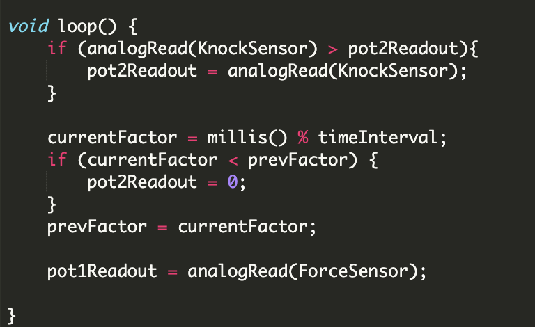

For the third project, I decided to use sensors to detect the data when I codeing.
I decide to use a force sensor and a knock sensor to collect data when I type the keyboard and click the mouse. The knock sensor detects press keyboard. Force sensor will put on my mouse to detect left click.
The tricky part of this project is that particle.io sending data to the browser each 1000ms. But I am not able to press the keyboard exactly at the time of sending data. So for the particle.io part, I need to let it catch the highest data in 1000ms of the knock sensor which means I press the keyboard. Then let it send this data to the browser.
For the data visualization, I use the colorful circle to represent the pressed keyboard and use pink flow to represent mouse press and click. In the end, the canvas will fill up with colorful circles and mouse clicks.